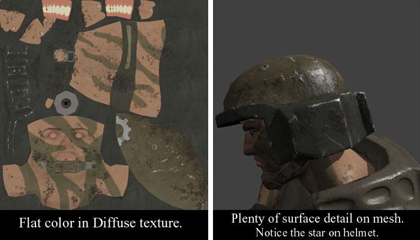
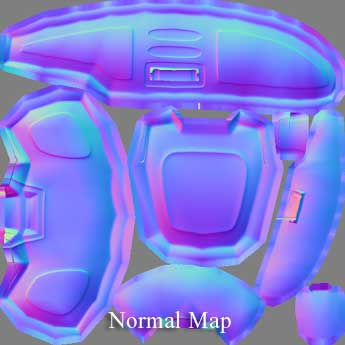
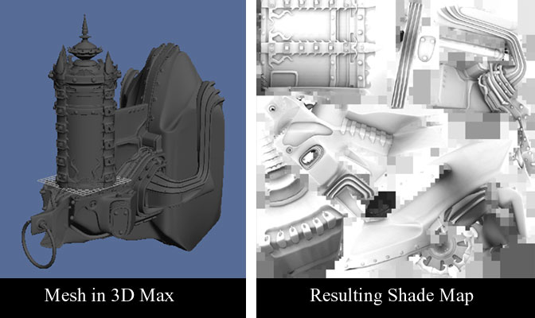
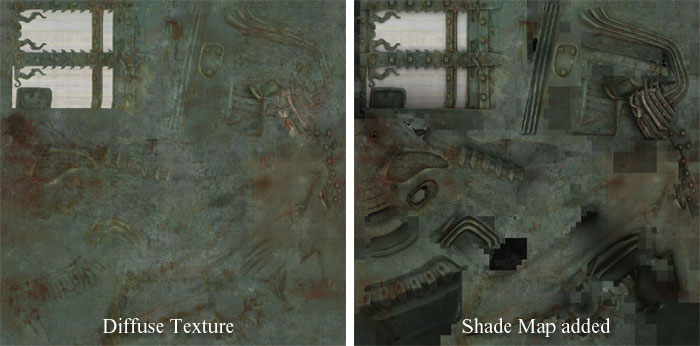

UDN
Search public documentation:
CreatingTexturesCH
English Translation
日本語訳
한국어
Interested in the Unreal Engine?
Visit the Unreal Technology site.
Looking for jobs and company info?
Check out the Epic games site.
Questions about support via UDN?
Contact the UDN Staff
日本語訳
한국어
Interested in the Unreal Engine?
Visit the Unreal Technology site.
Looking for jobs and company info?
Check out the Epic games site.
Questions about support via UDN?
Contact the UDN Staff
创建贴图
概述
凹凸贴图
Using Diffuse for Color, not Shading（颜色漫射而非着色）
在过去，好的贴图必须达到真假难辨的程度。衣服上的皱褶，机器上的螺钉，为了实现这些精致的细节，必须绘制不计其数的用于建模的多边形（在多数情况下，现在依然如此），必须耗尽心思考虑如何运用绘制的阴影和高光达到一种三维立体的幻觉。 在虚幻引擎3中，凹凸贴图可以为材质添加大量的光照细节。因此，在漫反射贴图中已经不太需额外的着色了。当采用凹凸贴图处理表面细节时，漫反射贴图同普通的原色已没有什么分别了。这在Spherical Harmonic（球谐）贴图时尤为明显，这种贴图方式带有自投影的凹凸粒子。 下述示例是一个士兵头部的漫反射贴图，这是由虚幻引擎3制作的材质。在这个漫反射贴图中，没有一点着色的信息。所有的着色渲染都由法线贴图完成。
可以看到头盔上的伤痕和凹凸都是单独存在于凹凸贴图的。连五角星标志亦是如此。在漫反射贴图中没有任何高光或阴影。法线贴图
在Photoshop中使用法线贴图
在制作漫反射贴图时，要想看到最终的视觉效果（凹凸贴图之后的效果）很困难，那么或许可以尝试以下的这项技术：
- 将法线贴图粘贴到新的层次中，使其位于所有层次的最上面。
- 降低饱和度 。
- 将层的混合类型设为 Multiply （正片叠底）。
- 根据需要调整Opacity（不透明度）。

着色贴图

创建着色贴图
3D Studio Max
请参阅创建着色贴图页面了解更多信息。SHTools
- 将您的 .SHM 复制到SHTools所在的目录中（可能是 *c:\SHTools\Bin*）。
- 打开命令行（DOS窗口中），定位到上述目录。
- 输入以下内容： MeshProcess CreateShadeMap "input.SHM" "output.TGA"
采用Mental Ray Ambient Occlusion（智能射线环境遮挡）进行着色贴图
通过采用智能射线的环境遮挡着色器，可以又快又好地制作出着色贴图。将着色器应用到模型的漫反射输入上，将材质设置为100%自发光。环境遮挡，有时也称为“dirtmap”，不需要任何光源，它可以制作非常完美的无方向着色（non-directional shading）效果。确保渲染器设为智能射线，否则不会出现着色器。应用着色贴图
现在已经有了着色贴图，接下来可以像之前运用法线贴图那样，将它用到漫反射贴图中：- 将着色贴图粘贴到新的Photoshop图层中，使其处于所有层的最上面。
- 将层的混合模式设为 Multiply （正片叠底）。
- 根据需要调整不透明度。

就是这样。将它导入到虚幻引擎3中进行尝试吧。如果着色太重的话，也可以降低着色贴图的不透明度。